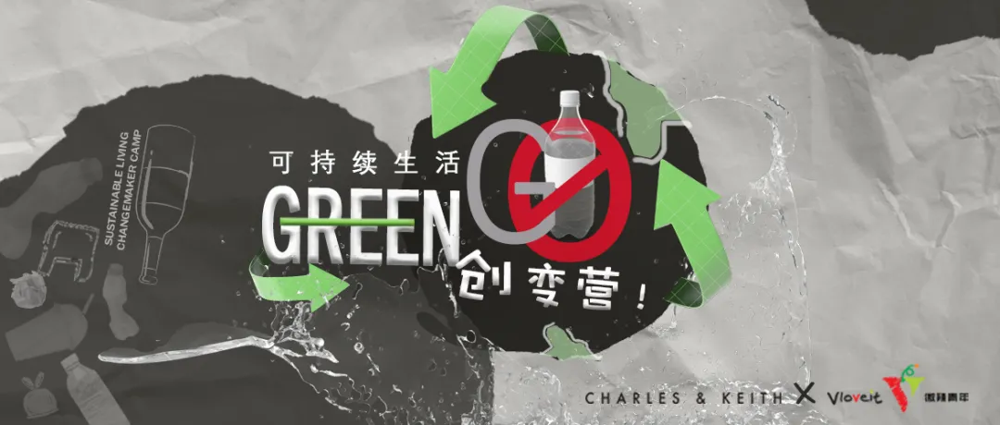
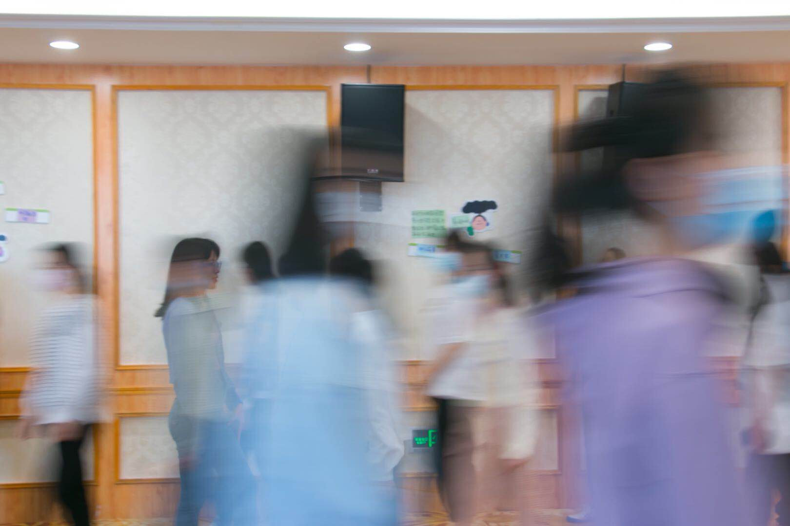
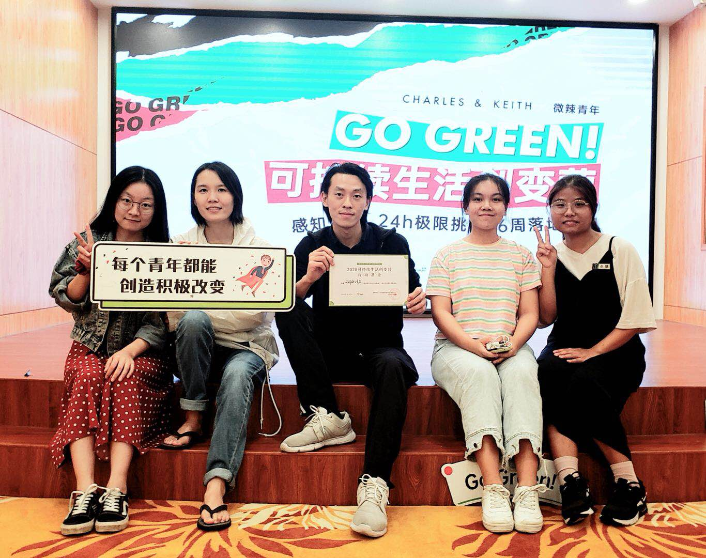
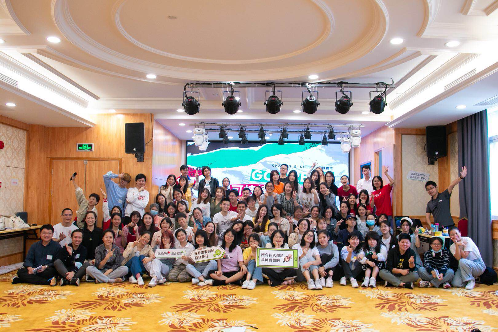

误入 GoGreen! 可持续生活创变营

创变营
上个月在朋友圈看到微辣青年在招募“GoGreen! 可持续生活创变营”营员，想着过去一段时间，在环保圈潜水太久了，出来露露脸，认识一下新伙伴也蛮好的。于是，不小心就报名了，然后参加面试，然后通过了。
报名之后，发现我手上的工作越来越多，也够忙好久了，腾出两个周末参加活动其实有点困难，于是纠结要不要参加。碍于已经答应主办方，并且交了押金，所以还是参加一下吧，反正提供酒店住宿，就当周末度假、学习好了。害，可我还是想得太简单了，于是度过了两个有点累、有点魔幻的周末。

感想
虽然因为参加 Go Green! 可持续生活创变营，错过了 1024 程序员节的研讨会，错过了开源社区工作小组的会议，也错过了家庭聚餐。但是，人生就是这样，总是充满了各种遗憾和惊喜。
说实话，营会的前半段很不适应，我也时常懊恼为什么在这里浪费时间，我想在这里获得什么？
尤其是上周没有去成自己想去的农场参访，被安排去奶茶店做调研的时候。实际上，我不喜欢喝奶茶，也看过调研报告，所以对我来说完全没有吸引力。我努力说服自己：“不要逃避，把它当作一次挑战吧，和你不熟悉的人，做一些不熟悉的事，加油！”还好，调研过程还算顺利，小伙伴也都比较积极，还认识了曾经在宜居广州工作的阿Lo。才发现其实我和阿Lo是多年的网友，也算是一个小惊喜吧。
再说这周末两天两夜的创变营会，也是够魔幻的。因为主办方只提供了大致行程，至于具体做什么只有到现场才知道。这就很尴尬了，跟我的度假计划完全对不上，只能见一步走一步。周六上午的创变议题分享，其实我也思考了很久，虽然我的确有一些想开展的项目，但因为我想偷懒嘛，所以肯定不会给自己挖坑。于是从操作难度和团队参与方面考虑，提出了一个《可持续生活指南》的学习计划。
后来和几个相似议题的小伙伴匆匆组队，很快就成了十几人的团队。在下午的行动方案讨论中，因为我发现了执行能力较强的小伙伴，基于最小工作量原则（摸鱼策略），我自然选择抱大腿的方案，尽量不表达自己的想法，先理解别人的方案。然而，两个小时过去了，讨论陷入了僵局，大家依然不太理解到底做什么、怎么分工合作。我也发现了部分小伙伴表现不积极，甚至出现迷茫、失落情绪。
我非常理解她们，她们来这个创变营的目的是想学习可持续生活方面的知识，想先让自己参与进来，从自身做起，再慢慢影响身边的人。而不是现在讨论的方案——组织线下活动，打造品牌，直接影响别人。显然，这些小伙伴们更希望先把注意力放在自己身上，先照顾好自己，先让自己变得优秀。此时此刻，我的心情是复杂的，因为我不想花太多时间去开展为期六周的落地行动，更何况是组织线下活动这种费神的事。但我又不太想当组长，在接下来的24小时中忙得焦头烂额，还要参加路演。
最终，还是内在的责任心驱动了我。好吧，我不想浪费时间，也不想我的小伙伴们浪费时间。就这样，我和几个不开心的小伙伴裂变出来了，重新讨论我们简单的《可持续生活指南》学习计划。我也顺理成章地担任临时组长角色，跟她们分享我的观点和计划。慢慢地，大家变得开心起来了，氛围也变得轻松了许多，我们也在紧锣密鼓地准备项目方案、项目计划书、PPT 和明天的路演。
虽然我常常在想创业的事，可是没想到人生中的第一次路演来得那么突然。有赖于团队成员的通力协作，不到24小时，我们完成了从团队成立到敲定方案、准备材料和作品展示的所有环节。让我感动的地方太多了！
- 首先是团队的力量。和四位女生合作，由于刚认识不久，我也担心提出的方案过于随意，缺乏亮点和竞争力，还好四位伙伴的积极性被点燃之后，展现出超强的能力，也让我从担心到放心。小娟负责项目计划书，辣辣负责 PPT，Echo 贡献了独家珍藏的《零垃圾新手入门》，噜啦啦帮忙梳理思路和路演的讲稿。
- 其次是感受到大家快乐的情绪，从原来小组里的沉默寡言、闷闷不乐，到现在积极讨论、主动承担工作。还说学到了新知识好开心呀，看着她们脸上绽放的笑容，我好像也受到了感染，也让我更有动力把这件事情做下去。
- 还有路演之前，因为我有点紧张，她们就在我身边不断地鼓励我。因为我们是最后一组演讲的，她们会认真听其他队伍演讲，然后给我反馈，我觉得特别好。
- 还有还有，周日下午复盘的时候，大家写的结果评估、成功失败原因分析都相当一致，还在失败一栏打了个大叉，哈哈～ 成功的关键是：轻松、开心的氛围，以及一致的观点。大家都是宝藏！
没想到的是，路演现场来了许多评委和嘉宾，有种广州环保圈小年会的感觉，看到了许多熟悉的面孔之后，更加紧张了！因为我的定位其实一直没有想好，感觉有点尴尬，所以每次公开讲话都要思考好久哪些该说哪些不该说。好吧，时间过得真快，路演就这么不完美地结束了。该进入下一阶段了！


本博客所有文章除特别声明外，均采用 CC BY-SA 4.0 协议 ，转载请注明出处！